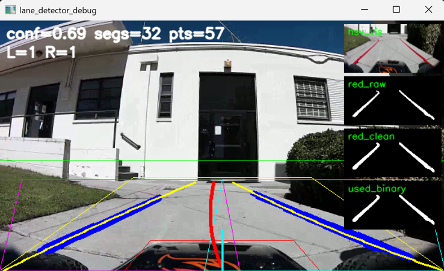
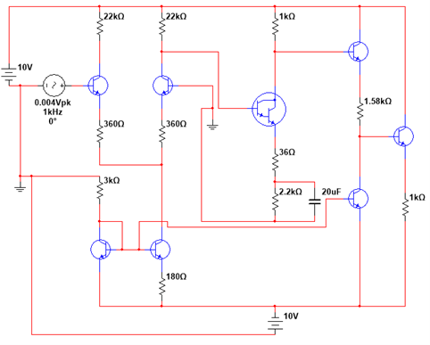
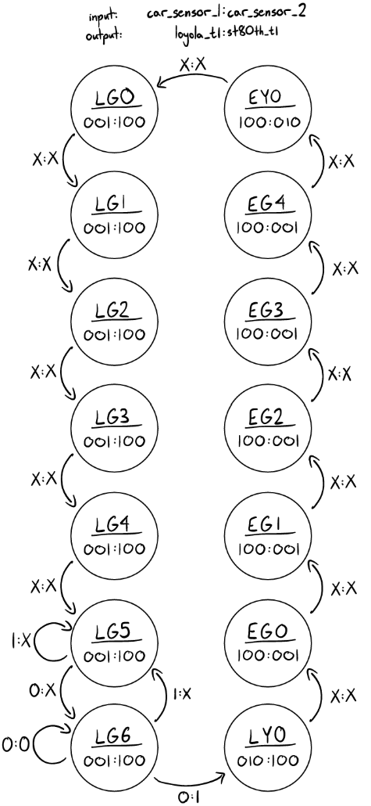
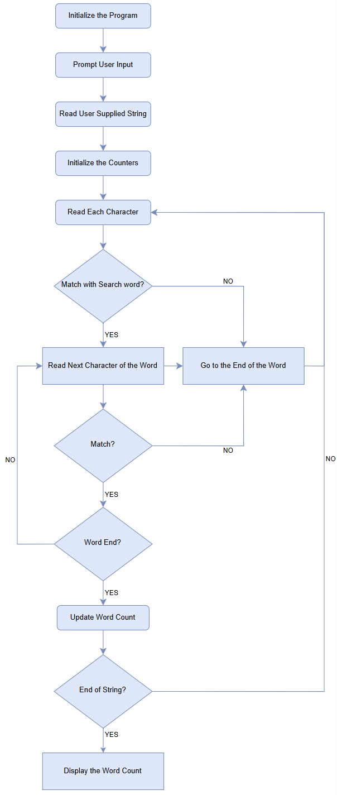
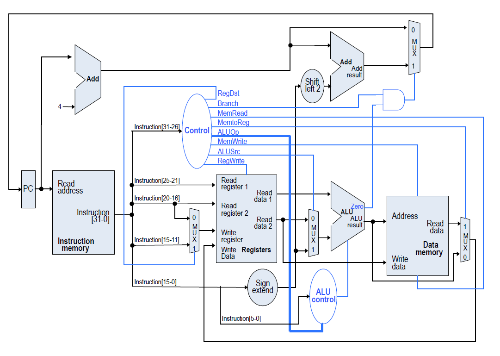

Smart Car Autonomous System
Autonomous vehicle project integrating perception, control, and system-level logic for lane following and real-time vehicle behavior.
Computer Vision • Control Systems • Embedded Systems
View on GitHub →
Computer Engineering | Embedded Systems | FPGA | Analog Design
Computer Engineering student graduating May 2026 with hands-on experience building autonomous and embedded systems, integrating perception, sensor fusion, and real-time control. My work spans both hardware and software, including deploying machine learning pipelines on NVIDIA Jetson platforms under real-time constraints.
I focus on system-level engineering, including architecture design, functional decomposition, and cross-domain integration, with an interest in advancing autonomous systems and embodied AI through real-world experimentation.

Autonomous vehicle project integrating perception, control, and system-level logic for lane following and real-time vehicle behavior.
Computer Vision • Control Systems • Embedded Systems
View on GitHub →
Real-time trading system using market data, automated buy/sell logic, deployment infrastructure, monitoring, and risk-control features.
Python • FastAPI • APIs • Real-Time Systems
View on GitHub →

Full discrete operational amplifier design including Widlar current source biasing, differential stage, gain stages, and frequency compensation.
Analog Design • BJT • Frequency Compensation
View on GitHub →

FPGA-based traffic controller using VHDL and finite state machine design, including real-time control logic and waveform-based validation.
VHDL • FPGA • Finite State Machines
View on GitHub →

ARM assembly program on Raspberry Pi performing string processing with GPIO-driven LED output, demonstrating low-level hardware control.
ARM Assembly • GPIO • Embedded Programming
View on GitHub →

Software-based CPU simulation implementing instruction execution, memory handling, and low-level control behavior to model computer architecture concepts.
Computer Architecture • Simulation • Low-Level Systems
View on GitHub →
Two-stage BJT amplifier combining common-emitter voltage gain with emitter follower buffering for impedance matching and stable amplification.
View on GitHub →
AC-to-DC regulated power supply using bridge rectification, capacitor filtering, and Zener diode regulation to achieve stable DC output.
View on GitHub →
Developed a Raspberry Pi–based closed-loop thermal control system for undergraduate research, designing monitoring and control logic for stable real-time operation under continuous load.
Raspberry Pi • Closed-Loop Control • PCB Instrumentation • Real-Time Monitoring
Served as a teaching and lab assistant across computer architecture, circuits, and mathematics, supporting 25+ students through instruction, office hours, and technical guidance. Reinforced system-level design, control logic, and analytical problem-solving while helping students bridge hardware and software concepts.
Computer Architecture • Circuits • Instruction • Problem Solving
Embedded systems, real-time control, hardware–software integration, system architecture, and functional decomposition
VHDL, finite state machines, timing design, and hardware validation
Op-amp design, BJT amplifiers, biasing, frequency response, and power supply design
Python, C++, machine learning frameworks, FastAPI, and embedded platforms including NVIDIA Jetson and Raspberry Pi
I am a Computer Engineering student with a focus on embedded systems, digital hardware, and analog circuit design. I enjoy building complete systems that integrate hardware and software, from low-level circuit design to real-time control and system architecture.
My interests lie in autonomous systems, embedded intelligence, and hardware-driven computing. I am particularly interested in designing systems that operate under real-world constraints, where performance, reliability, and integration matter as much as functionality.
I am currently seeking opportunities to contribute to engineering teams working on embedded systems, robotics, or intelligent hardware platforms.